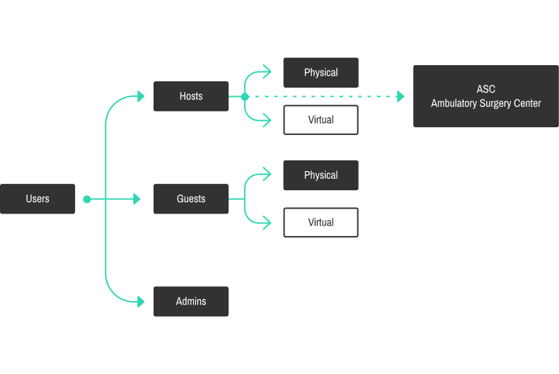
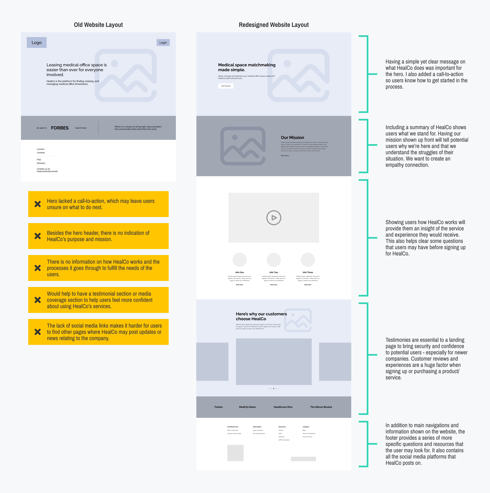
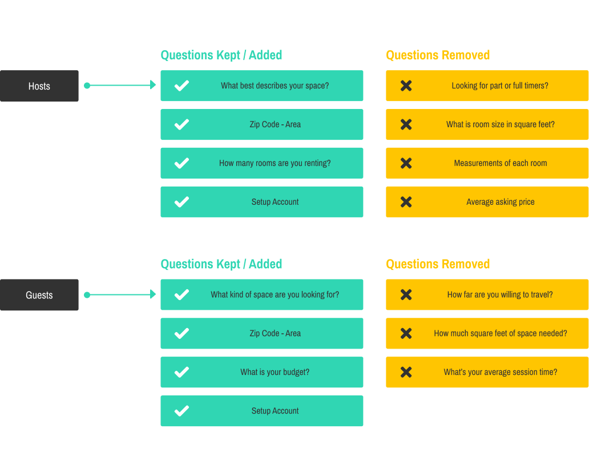
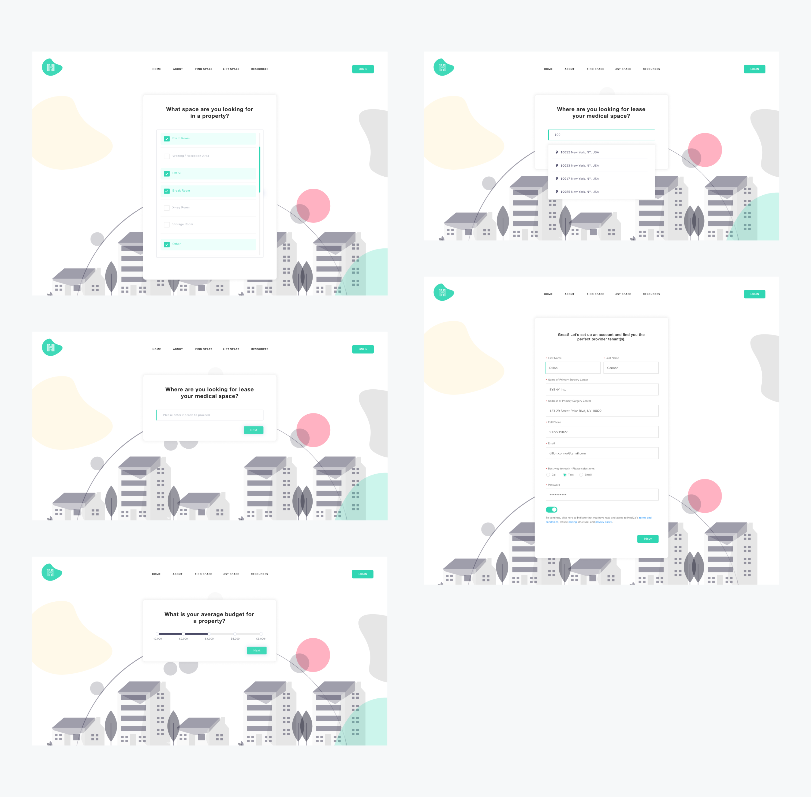
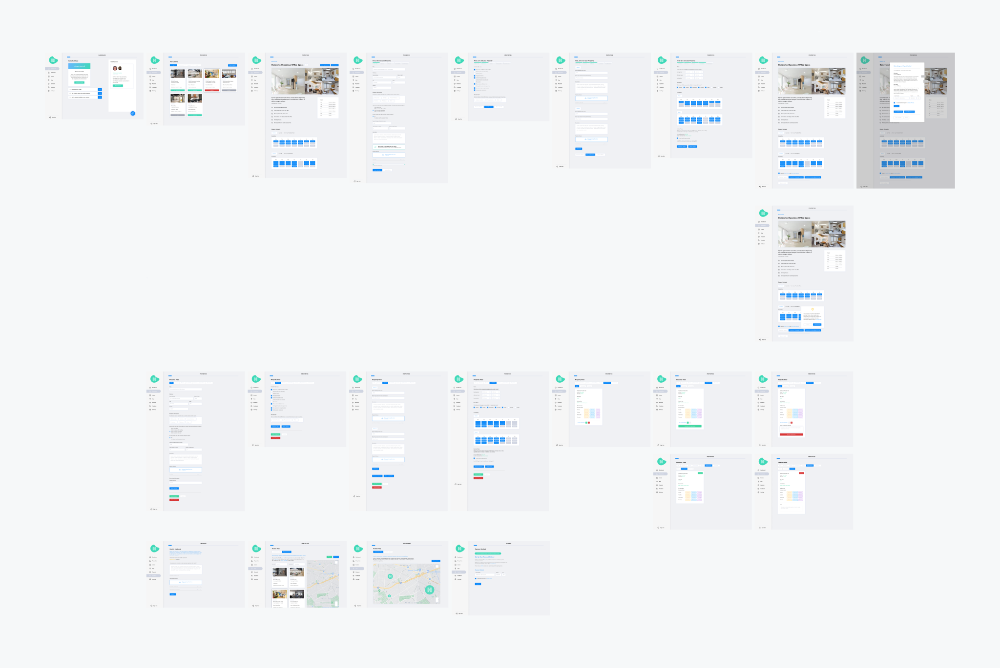
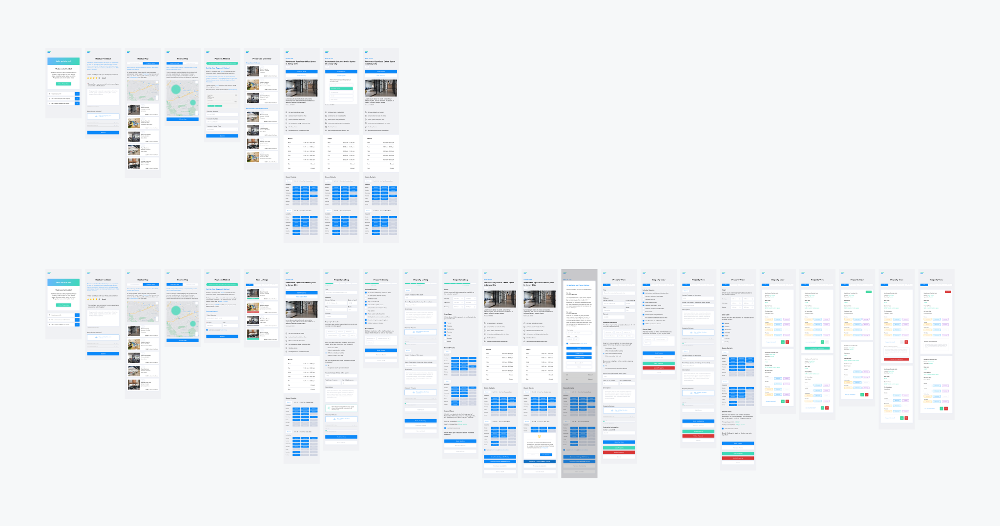
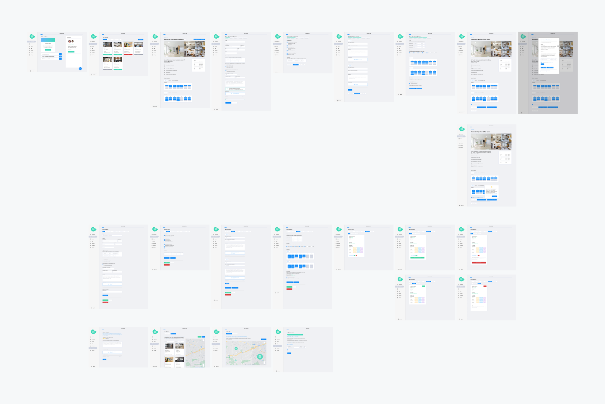
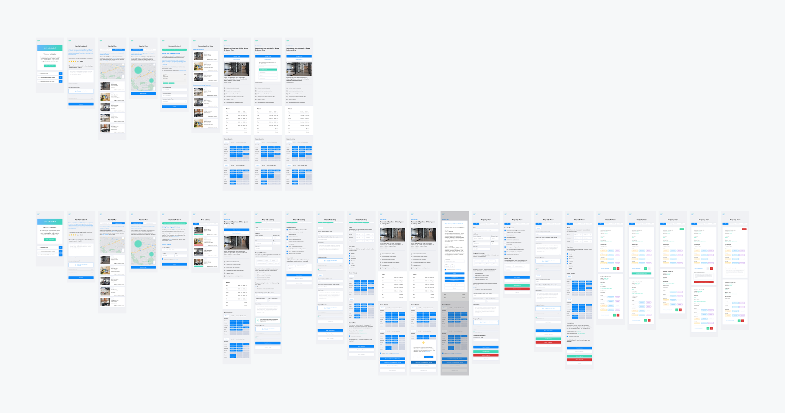

Overview
What is HealCo?
HealCo is a web platform specifically made for medical hosts/guests to lease/rent a medically equipped and approved space based on their specialties. For hosts, it allowed easy enlistment of their properties while using a matchmaking system to connect with the ideal guest. For guests, it provided a variety of properties based on the different filters the guests selected.
HealCo also has a huge focus on telemedicine - a way for patients to receive medical assistance through digital and long distance means.
Roles
My role at HealCo was as a UX/UI Designer. I worked closely with 4 Full Stack Engineers and 2 analytics team members. The CEO was also heavily involved when it came to decision making.
Users
There are 3 categories of users - hosts who were looking to rent out their medically approved space, guests who were looking for medically equipped and approved space, and the admins of HealCo who mediated the information, requests, and applications on the platform. While the hosts and guests have similar experiences, I had to keep in mind the extra features that admins would have through their journey.
{kind=link}
Goals
Complete Redesign
As HealCo was still a relatively new company, most of their tasks were focused on the completion of its core features. This left the design at a bare minimum.
I was brought into HealCo to redesign the entire user interface and experience for their entire HealCo platform - this includes their website, form flows, and dashboard. One thing I had to keep in mind was scalability, as HealCo was still rapidly rolling out new features for its users.
Order of Goals
Since I needed to redesign the entire HealCo platform, the first thing I needed to do was figure out and plan the flow direction for users. The end-to-end experience was crucial to keep users on track to fulfill all requirements sent by HealCo.
- Website: Being the initial starting point for any HealCo user, it is essential to have a welcoming landing page with information for users to provide knowledge, security, and confidence.
- Form Flows: Following the website, users are prompted to a form flow. This form flow provides a set of questions and requirements for HealCo’s database.
- Dashboard: The dashboard is the central hub for all users (hosts/guests/admins). Every feature of HealCo will be available to use within the personalized dashboard.

Website Redesign
The Starting Line
The HealCo website was the starting line for all users. Whether it’s to sign up, login, or view articles, this was the starting hub for all features provided by HealCo.
What's the issue?
The biggest issue with HealCo’s initial website was the lack of information. Being the initial starting point for new users, it was crucial to give new visitors information, security, and confidence when applying for HealCo. Users had no idea what services HealCo provided, how it worked, and whether or not HealCo was a legitimate service. Before coming up with a design, I figured out the questions that users asked before committing to a product or service. This information was used to determine the necessary information the website would provide to users.
Ideation
For the landing page, I made sure to provide as much information as possible without overloading users. I broke down the features and information that was most noted by users:
{kind=link}
- HealCo's purpose and mission - so users know they’re joining a platform who knows the wants of its users and fulfills them.
- How HealCo works - knowing upfront what HealCo does with crystal clear understanding so users know what service they’re receiving.
- Testimonies - to build trust, security, and reliability for users interested in HealCo’s services.
- Mentions from reputable sources - as HealCo is a relatively new company, it is important to reference articles and mentions from reputable sources (like Forbes) to show its legitimacy.
Result

First Hurdle Passed - Website Redesign Conclusion
With the new landing page, we’re able to showcase all the crucial information that users look for when signing up for a new service. It showcases all the initial information about HealCo, providing new users with confidence in HealCo’s purpose, reliability, and trust. Multiple call-to-actions have also been added to provide direction for new users.
Form Flows Redesign
The Halfway Point
After viewing the HealCo website, new users are sent to a sequence of forms. This sequence asks users questions to better identify what they’re looking for.
What's the issue?
The main issue with the initial form flow was the amount of tediously specific questions that users were required to fill in before being allowed to proceed. Users felt lost and frustrated when asked such specific questions before they were even given a chance to get to the dashboard to see what HealCo had to offer. This led to some users leaving the form mid-way through the process.
Getting rid of the tedious
The main issue with the initial form flow was the amount of tediously specific questions that users were required to fill in before being allowed to proceed. Users felt lost and frustrated when asked such specific questions before they were even given a chance to get to the dashboard to see what HealCo had to offer. This led to some users leaving the form mid-way through the process.
{kind=link}
Result
{kind=link}
Form Fulfillments Increased - Form Flow Conclusion
Addressing the requirements of tedious questions, I first laid out the entire flow process and marked them by importance and relevance. Besides the mandatory questions of personal information, I kept the questions that gave a general idea of what users were looking for. I was able to remove half of the questions asked but still kept enough information for HealCo to categorize and create personalized dashboards and results for each user.
Dashboard Redesign
The Finish Line
After viewing the website and completing the form flow, users are finally presented with their personal dashboard.
What's the issue?
Although users received their personalized dashboards, the information and services provided were all over the place. It was difficult for users to navigate through their dashboard to the section they wanted. There was a huge lack of connections and links between information, making the user traverse through the entire dashboard to find the correlated information. There was also a lack of any indications of current progression. Providing the user “what” and “where” they are in any current session is important to keep them on track and being transparent.
Less searching, more doing
I laid out every feature and it’s flow for all users - Admins, Hosts, and Guests. I realized the lack of connections and links between information, making the user go through the entire dashboard to find the correlation information. I included many necessary hyperlinks for users to click if they wanted more information.
 



{kind=link}
{kind=link}
I also added a visual of progression so users knew how they were doing in the current flow they were in. One thing I focused on was creating a sense of flow between each feature for the users to follow through. This helped users complete each step without being lost on what they’re required to do next.

Conclusion
Completing the marathon
Whether it was the lack of information or the abundance of unnecessary requirements, HealCo’s end-to-end flow gave users a confusing and frustrating experience.
Through the new redesign, it solved the main issues for each section of the user flow. The website provides all the necessary information for new users, the updated user flow ensures a smooth experience to promote completion, and the dashboard provides a much needed navigation system that connects relevant areas.
This smooth experience from start to finish gives users confidence in themselves and the platform that they’re using.

Back to top
Want to get in contact?
Feel free to send me a message for any questions or inquiries through my email at seo.kenny94@gmail.com.
Designed and developed by Kenny.